Deployment Workflow
(under construction)
[concrete steps to deploy assuming setup]
Deployment Setup Guide
- Deployment Guide
- Publish to Maven Central via Central Portal
- 1. Create Sonatype Maven Central Account
- 2. Add and verify the namespace/groupId
- 3. Metadata requirements
- 4. Sources and JavaDoc
- 5. Generate and Distribute a GPG Key for Signing
- 6. Add GPG plugin
- 7. Generate a user token
- 8. Add Publication Maven plugin to
pom.xml - 9. Setup
settings.xml - 10. Locally Deploy
- 11. [Optional] GitHub Actions & CI/CD
- Extra notes
- References
- Publish to Maven Central via Central Portal
Publish to Maven Central via Central Portal
This is after the OSSRH sunset (June 30, 2025).
Requirements:
- git
- Maven & JDK
- GPG
1. Create Sonatype Maven Central Account
Sign up at https://central.sonatype.com
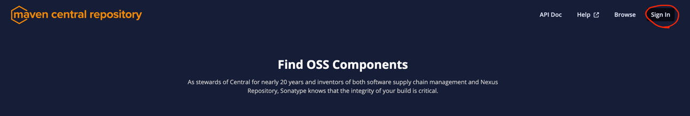
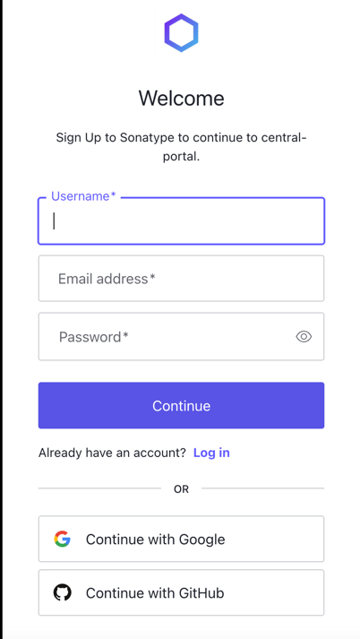
Tip: If you are fine with
io.github.<myusername>as a namespace/groupId, sign up with GitHub to automatically register it. You can skip step 2 and move onto step 3: metadata requirements.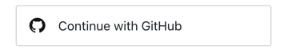
If you want
io.github.<github organization name>, it is not available as an automatically registered namespace and would need to make a public repository with verification key as the name:github.com/<org>/<verification-key>. More on step 2
2. Add and verify the namespace/groupId
To add a namespace, click on username/email address in the top right corner of https://central.sonatype.com, then click on “View Namespaces” in the dropdown.
Click on “Add Namespace” button.
Enter a namespace (it is a reversed domain name), click “Submit” then click “Verify Namespace” button.
Namespace can either be:
A web domain you own. Verification involves adding a DNS TXT record to DNS registrars or hosting providers with a value set to the provided Verification Key. For instance, your groupId isca.yorku.cmgso domain name isca.yorku, where the automated system will check for the TXT record.
Do not confirm unless you've added a DNS TXT record. Do not proceed with verification unless you have added and verified your DNS TXT record. Doing so will result in namespace verification delays
- A domain linked to a Code Hosting Service such as GitHub. For example. GitHub-based namespace is
io.github.<myusername>. Verification only requires signing up with GitHub (for GitHub user accounts) or creating a temporary public repository like this:github.com/<myusername>/verification-keyorgithub.com/<org>/<verification-key>(repository with a name as Verification Key). This verification process is easier compared to DNS TXT record.
If done correctly, verification status should be changed to “Verified.”
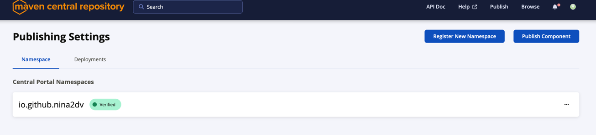
3. Metadata requirements
versioncannot end in-SNAPSHOTfor Maven Central’s release repository. Only the dedicated snapshot repository does.
On top of groupId, artifactId, version (should follow semantic versioning), pom.xml needs to have:
namedescriptionurlof project
<name>cnsim-engine</name>
<description>cnsim-engine description</description>
<url>http://www.example.com</url>
licensesused for distributing your components
<licenses>
<license>
<name>GNU Lesser General Public License, Version 2.1</name>
<url>https://www.gnu.org/licenses/old-licenses/lgpl-2.1.html</url>
</license>
</licenses>
developers
If the person should not be contacted about the project, they need not be listed here.
Here's an example:
<developers>
<developer>
<id>john</id> <!-- optional -->
<name>John Doe</name> <!-- recommended -->
<email>john@example.com</email> <!-- optional (many skip to avoid spam) -->
<organization>York University</organization> <!-- optional -->
<organizationUrl>https://lassonde.yorku.ca</organizationUrl> <!-- optional -->
</developer>
<developer>
<id>bob</id> <!-- optional -->
<name>Bob Smith</name> <!-- recommended -->
<url>https://github.com/bobsmith</url> <!-- optional -->
</developer>
</developers>
scm
Source Code Management (SCM) is connection to your source control system. URL does not need to be public.
<scm>
<connection>scm:git:https://github.com/cmg-york/cnsim-engine.git</connection>
<developerConnection>scm:git:ssh://git@github.com/cmg-york/cnsim-engine.git</developerConnection>
<url>https://github.com/cmg-york/cnsim-engine</url>
</scm>
4. Sources and JavaDoc
For every
<artifactId>-<version>.jar, you must provide a corresponding<artifactId>-<version>-sources.jarand a<artifactId>-<version>-javadoc.jar
Add these two plugins:
<build>
<plugins>
<!-- Sources JAR -->
<plugin>
<artifactId>maven-source-plugin</artifactId>
<version>3.3.1</version>
<executions>
<execution>
<id>attach-sources</id>
<phase>package</phase>
<goals><goal>jar-no-fork</goal></goals>
</execution>
</executions>
</plugin>
<!-- Javadoc JAR -->
<plugin>
<artifactId>maven-javadoc-plugin</artifactId>
<version>3.11.1</version>
<configuration>
<!-- So javadoc doesn’t fail your release due to missing comments -->
<doclint>all,-missing</doclint>
</configuration>
<executions>
<execution>
<id>attach-javadocs</id>
<phase>package</phase>
<goals><goal>jar</goal></goals>
</execution>
</executions>
</plugin>
</plugins>
</build>
5. Generate and Distribute a GPG Key for Signing
Create a key pair:
gpg --full-generate-key
Follow the prompts and make sure to enter a real email. Pick a secure passphrase and remember it.
List the key:
gpg --list-secret-keys --keyid-format=long
Make public key discoverable:
# Upload to Ubuntu keyserver (no email verification)
gpg --keyserver keyserver.ubuntu.com --send-keys <KEY_ID>
# Upload to OpenPGP keyserver (email verification required per UID)
gpg --keyserver keys.openpgp.org --send-keys <KEY_ID>
To verify upload:
# For Ubuntu keyserver
gpg --keyserver keyserver.ubuntu.com --recv-keys <KEY_ID>
# For OpenPGP keyserver
gpg --keyserver keys.openpgp.org --recv-keys <KEY_ID>
Export and store the keys:
# Export private key
gpg --export-secret-keys --armor <KEY_ID> > private.key
# Export public key
gpg --export --armor <KEY_ID> > public.key
6. Add GPG plugin
All artifacts are required to be signed.
maven-gpg-plugin will sign the POM, JAR, and attached artifacts with your GPG key.
<plugin>
<groupId>org.apache.maven.plugins</groupId>
<artifactId>maven-gpg-plugin</artifactId>
<version>3.2.7</version>
<executions>
<execution>
<id>sign-artifacts</id>
<phase>verify</phase>
<goals><goal>sign</goal></goals>
</execution>
</executions>
<configuration>
<!-- optional: explicitly choose key -->
<!-- <keyname>${gpg.keyname}</keyname> -->
</configuration>
</plugin>
7. Generate a user token
Hover over the top right account profile and navigate to “View Account”:
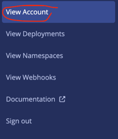
Click the “Generate User Token” button:
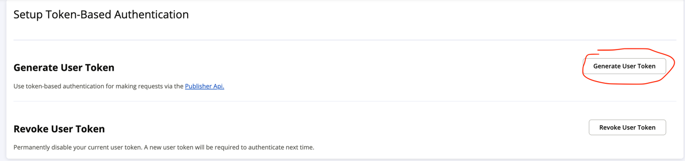
Click “Ok”:
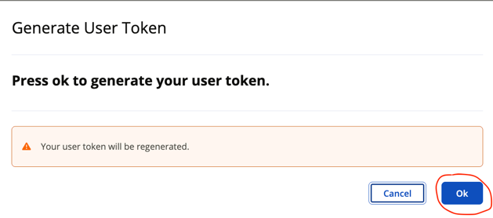
Note: This action will invalidate any existing token
Save the credentials:
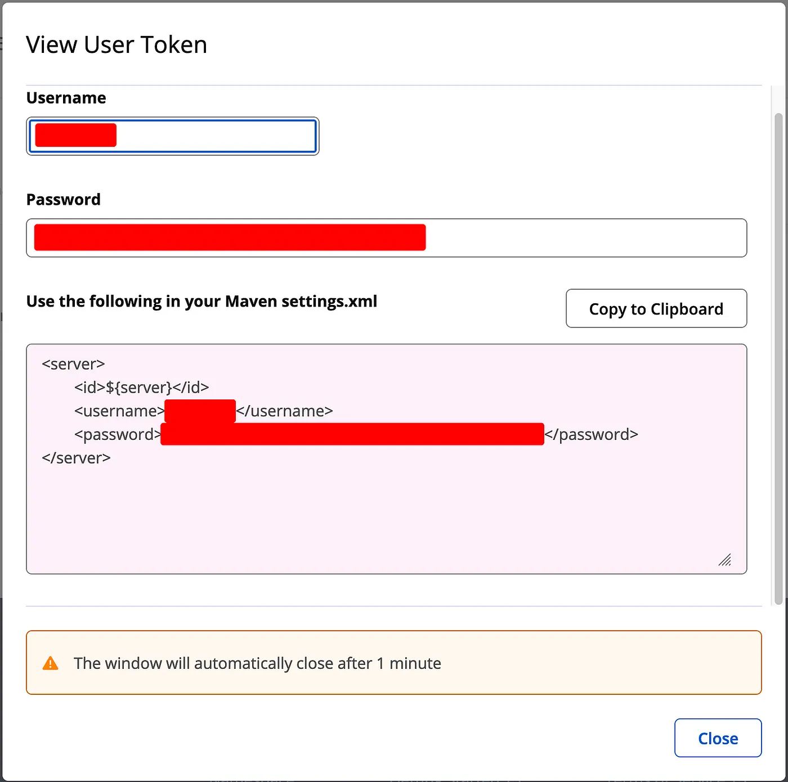
8. Add Publication Maven plugin to pom.xml
<plugin>
<groupId>org.sonatype.central</groupId>
<artifactId>central-publishing-maven-plugin</artifactId>
<version>0.8.0</version>
<extensions>true</extensions>
<configuration>
<publishingServerId>central</publishingServerId>
<autoPublish>true</autoPublish>
<waitUntil>uploaded</waitUntil>
</configuration>
</plugin>
Overall pom.xml looks like this:
<?xml version="1.0" encoding="UTF-8"?>
<project xmlns="http://maven.apache.org/POM/4.0.0"
xmlns:xsi="http://www.w3.org/2001/XMLSchema-instance"
xsi:schemaLocation="http://maven.apache.org/POM/4.0.0 http://maven.apache.org/maven-v4_0_0.xsd">
<modelVersion>4.0.0</modelVersion>
<groupId>ca.yorku.cmg</groupId>
<artifactId>cnsim-engine</artifactId>
<version>0.1.0</version>
<packaging>jar</packaging>
<name>cnsim-engine</name>
<description>cnsim-engine description</description>
<url>http://www.example.com</url>
<licenses>
<license>
<name>GNU Lesser General Public License, Version 2.1</name>
<url>https://www.gnu.org/licenses/old-licenses/lgpl-2.1.html</url>
</license>
</licenses>
<developers>
<developer>
<name>John Doe</name>
<url>https://github.com/johndoe</url>
<email>john@example.com</email>
<organization>York University</organization>
<organizationUrl>https://lassonde.yorku.ca</organizationUrl>
</developer>
</developers>
<scm>
<connection>scm:git:https://github.com/cmg-york/cnsim-engine.git</connection>
<developerConnection>scm:git:ssh://git@github.com/cmg-york/cnsim-engine.git</developerConnection>
<url>https://github.com/cmg-york/cnsim-engine</url>
</scm>
<properties>
...
</properties>
<dependencies>
...
</dependencies>
<profiles>
<profile>
<id>deployment</id>
<build>
<plugins>
<!-- Attach sources.jar at package -->
<plugin>
<groupId>org.apache.maven.plugins</groupId>
<artifactId>maven-source-plugin</artifactId>
<version>3.3.1</version>
<executions>
<execution>
<id>attach-sources</id>
<phase>package</phase>
<goals><goal>jar-no-fork</goal></goals>
</execution>
</executions>
</plugin>
<!-- Attach javadoc.jar at package -->
<plugin>
<groupId>org.apache.maven.plugins</groupId>
<artifactId>maven-javadoc-plugin</artifactId>
<version>3.11.1</version>
<configuration>
<doclint>all,-missing</doclint>
</configuration>
<executions>
<execution>
<id>attach-javadocs</id>
<phase>package</phase>
<goals><goal>jar</goal></goals>
</execution>
</executions>
</plugin>
<!-- Sign everything at verify -->
<plugin>
<groupId>org.apache.maven.plugins</groupId>
<artifactId>maven-gpg-plugin</artifactId>
<version>3.2.7</version>
<executions>
<execution>
<id>sign-artifacts</id>
<phase>verify</phase>
<goals><goal>sign</goal></goals>
</execution>
</executions>
<configuration>
<!-- optional: explicitly choose key -->
<!-- <keyname>${gpg.keyname}</keyname> -->
</configuration>
</plugin>
<!-- Publish at deploy -->
<plugin>
<groupId>org.sonatype.central</groupId>
<artifactId>central-publishing-maven-plugin</artifactId>
<version>0.8.0</version>
<extensions>true</extensions>
<configuration>
<publishingServerId>central</publishingServerId>
<autoPublish>true</autoPublish>
<!-- 'uploaded' returns sooner; 'published' waits until it’s visible -->
<waitUntil>uploaded</waitUntil>
</configuration>
</plugin>
</plugins>
</build>
</profile>
</profiles>
</project>
Javadoc and sources generation can slow down the regular build process. It is good to move release-only plugins behind a profile.
9. Setup settings.xml
You can add Sonatype user token to Maven settings.xml
Windows: C:\Users\your_username\.m2\settings.xml
Linux/macOS: /home/your_username/.m2/settings.xml
If you don't want to use the default Maven settings.xml, you can use another XML file.
Either way, it should look like this:
<settings xmlns="http://maven.apache.org/SETTINGS/1.0.0"
xmlns:xsi="http://www.w3.org/2001/XMLSchema-instance"
xsi:schemaLocation="http://maven.apache.org/SETTINGS/1.0.0 https://maven.apache.org/xsd/settings-1.0.0.xsd">
<servers>
<server>
<id>central</id>
<!-- replace this with generated username -->
<username>username</username>
<!-- replace this with generated password -->
<password>password</password>
</server>
</servers>
</settings>
10. Locally Deploy
# If using default Maven settings.xml
mvn -Pdeployment clean deploy
# If pointing to a custom settings.xml
mvn -Pdeployment clean deploy -s some_file.xml
# There will be a prompt in the console for entering the passphrase
This runs:
- package - builds main + sources + javadoc jars
- verify - GPG signs all artifacts
- deploy - Central Publishing plugin uploads and publishes
Go to Sonatype deployments page.
Verified status should be changed to Publishing.
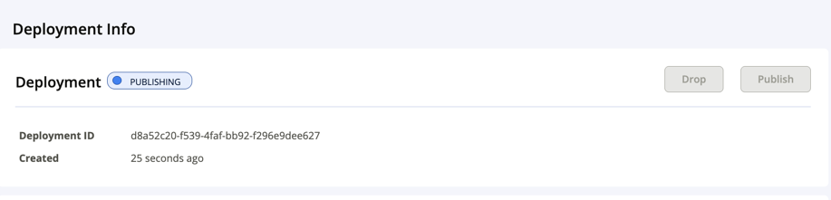
After a few minutes, if successful, it should be updated to Published.
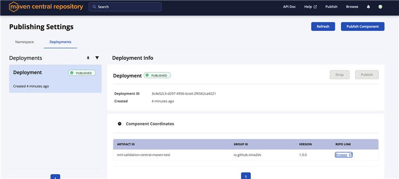
You can now add it as a dependency and search for your package here: https://central.sonatype.com/
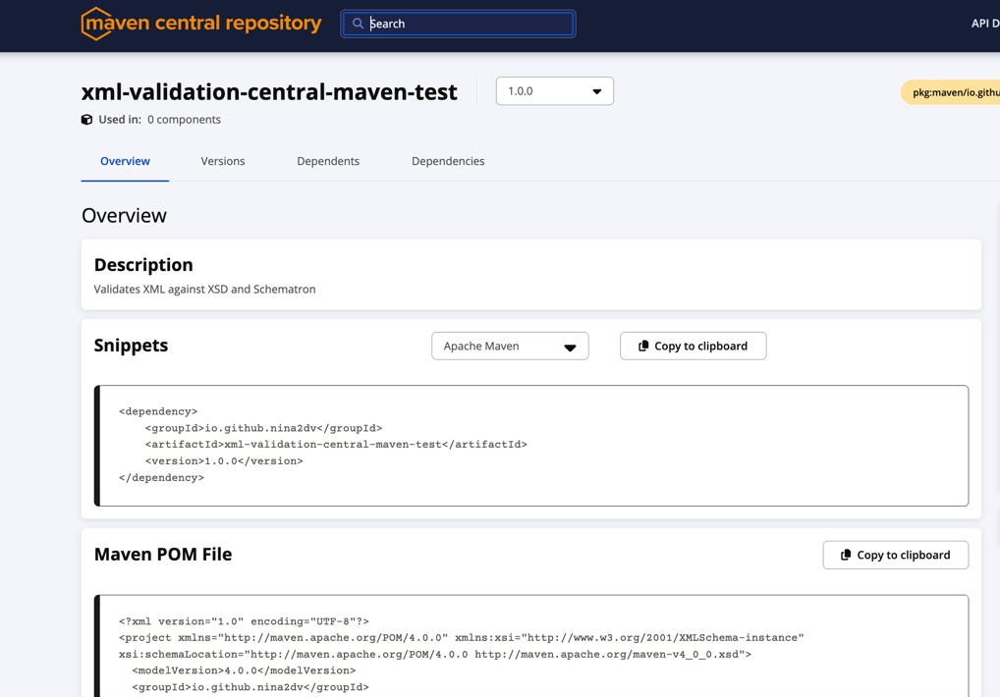
Unlike pulling from GitHub Package, users do not require a Personal Access Token (PAT) in order to install a dependency up on Central Maven
11. [Optional] GitHub Actions & CI/CD
In order for GitHub Actions to deploy to Maven Central, skip the pinentry program (the GUI passphrase prompt) and use loopback (non-interactive) to accept the passphrase:
<plugin>
<groupId>org.apache.maven.plugins</groupId>
<artifactId>maven-gpg-plugin</artifactId>
<version>3.2.7</version>
<executions>
<execution>
<id>sign-artifacts</id>
<phase>verify</phase>
<goals><goal>sign</goal></goals>
</execution>
</executions>
<configuration>
<!-- optional: explicitly choose key -->
<!-- <keyname>${gpg.keyname}</keyname> -->
<gpgArguments>
<arg>--pinentry-mode</arg><arg>loopback</arg> <!-- ADD THIS -->
</gpgArguments>
</configuration>
</plugin>
In github/workflows/publish-artifact.yml:
name: "Publish Artifact"
on:
workflow_dispatch: # manually triggered
permissions:
contents: write
jobs:
publish-artifact:
runs-on: ubuntu-latest
name: Publish artifact via The Central Portal
steps:
- name: Checkout repository
uses: actions/checkout@v4
with:
fetch-depth: 0
ref: ${{ github.ref_name }}
- name: Set up JDK 17
uses: actions/setup-java@v4
with:
java-version: '17'
distribution: 'temurin'
cache: maven
server-id: central
server-username: MAVEN_USERNAME # env variable for username in deploy
server-password: MAVEN_CENTRAL_TOKEN # env variable for token in deploy
gpg-private-key: ${{ secrets.MAVEN_GPG_PRIVATE_KEY }} # Value of the GPG private key to import
gpg-passphrase: MAVEN_GPG_PASSPHRASE # env variable for GPG private key passphrase
- name: Publish artifact
run: mvn clean deploy -P deployment
env:
MAVEN_USERNAME: ${{ secrets.MAVEN_CENTRAL_USERNAME }}
MAVEN_CENTRAL_TOKEN: ${{ secrets.MAVEN_CENTRAL_TOKEN }}
MAVEN_GPG_PASSPHRASE: ${{ secrets.MAVEN_GPG_PASSPHRASE }}
Add the following secrets in GitHub repository (Repository Settings > Secrets > Actions > New repository secret):
MAVEN_CENTRAL_USERNAME
MAVEN_CENTRAL_TOKEN
MAVEN_GPG_PASSPHRASE
MAVEN_GPG_PRIVATE_KEY
There's a way to publish artifacts on Central and make releases on GitHub by pushing tags
Extra notes
SNAPSHOTs
You can publish SNAPSHOTs to Central. Enable snapshots for your namespace by
In Namespaces > your namespace > Enable SNAPSHOTs
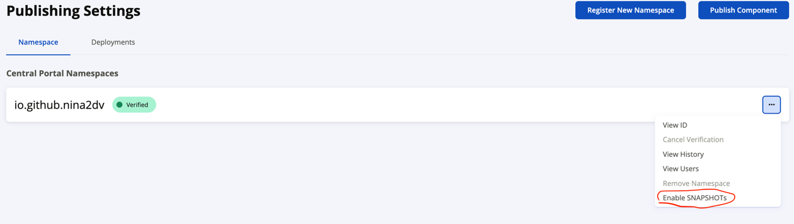
Have -SNAPSHOT in version then deploy as usual
mvn -Pdeployment clean deploy
Manually getting artifacts or built JAR
You can get JAR from Maven Central (release) or the Central Snapshots repo (SNAPSHOTs).
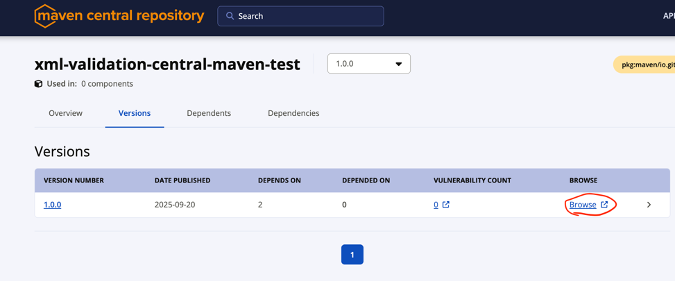
Example: https://repo1.maven.org/maven2/io/github/nina2dv/xml-validation-central-maven-test/1.0.0/
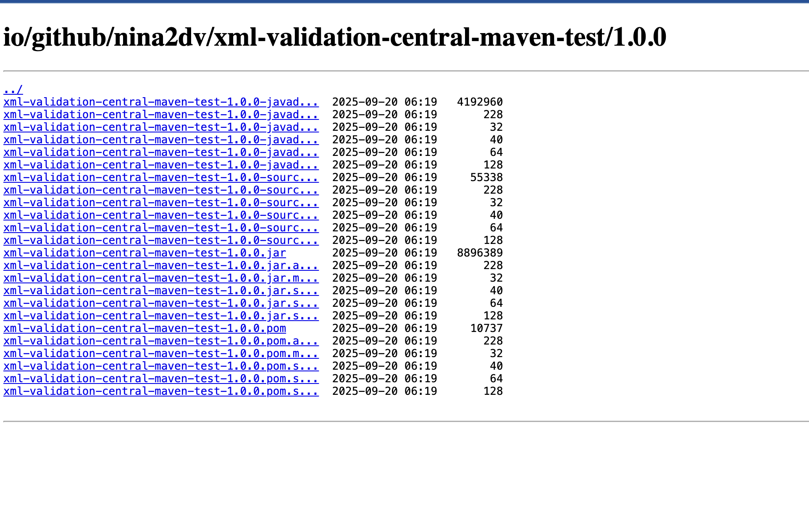